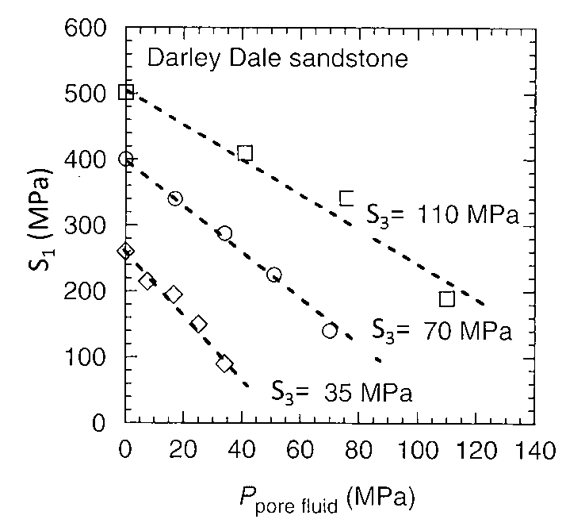
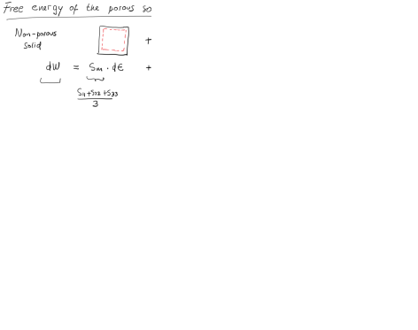
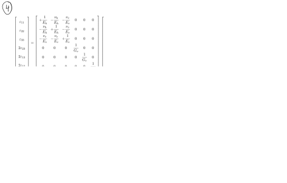
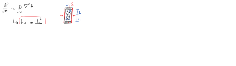

Next: 6. Mechanics of fluid driven Up: Advanced Geomechanics - Class Notes Previous: 4. Thermo- and chemo-mechanical coupled Contents
This document is a draft. Find hand written notes here: https://github.com/dnicolasespinoza/GeomechanicsJupyter/tree/master/ClassNotes.
The following data set has experimental data of shear strength for the Darley Dale Sandstone measured in an axisymmetric triaxial cell.
 |
where  is the maximum total principal stress,
is the maximum total principal stress,  is the minimum total principal stress, and
is the minimum total principal stress, and
 is the pore pressure in the rock.
is the pore pressure in the rock.
 .
.
 and friction angle
and friction angle  from point (1) and draw the shear failure line together with Mohr circles at failure.
from point (1) and draw the shear failure line together with Mohr circles at failure.
 space.
space.
For this assignment you have to be able to calculate principal stresses on the wall of a wellbore at an arbitrary deviation and azimuth (See Chapter 6 of my notes “Wellbore stability” (https://dnicolasespinoza.github.io/) and Zoback's book Ch. 8).
Develop a script to compute and illustrate graphically (lower hemisphere projection):
 and a simple tensile strength criterion (independent of intermediate and maximum principal stresses), i.e., required .
and a simple unconfined compression strength criterion, i.e., required
and a simple tensile strength criterion (independent of intermediate and maximum principal stresses), i.e., required .
and a simple unconfined compression strength criterion, i.e., required  .
.
 considering a Mohr-Coulomb shear failure criterion and the properties of the Darley Dale Sandstone from Exercise 1.
considering a linear v.s.
shear failure criterion and the properties of the Darley Dale Sandstone from Exercise 1.
considering a Modified Lade shear failure criterion (Zoback's book, p. 100) and the properties of the Darley Dale Sandstone from point 1.
considering a Mohr-Coulomb shear failure criterion and the properties of the Darley Dale Sandstone from Exercise 1.
considering a linear v.s.
shear failure criterion and the properties of the Darley Dale Sandstone from Exercise 1.
considering a Modified Lade shear failure criterion (Zoback's book, p. 100) and the properties of the Darley Dale Sandstone from point 1.
Limit your wellbore breakout angle plots to
 because predictions with linear elasticity over
because predictions with linear elasticity over
 are likely highly inaccurate.
Test your script with the three examples given in Zobacks's book in Figures 8.2 and 10.4 (normal faulting, strike-slip faulting, and reverse faulting). When computing breakouts assume = 32 MPa (NF), = 40 MPa (SSF), and = 52 MPa (RF). Use a Poisson ratio of 0.25 for stress calculations.
are likely highly inaccurate.
Test your script with the three examples given in Zobacks's book in Figures 8.2 and 10.4 (normal faulting, strike-slip faulting, and reverse faulting). When computing breakouts assume = 32 MPa (NF), = 40 MPa (SSF), and = 52 MPa (RF). Use a Poisson ratio of 0.25 for stress calculations.
 |
The following data set contains well-logging measurements of porosity of a mudrock as a function of depth (Eugene Island – offshore Louisiana):
 |
 = 0.950 psi/ft and pick the seafloor from the shallowest data point in “percent sand” plot.
= 0.950 psi/ft and pick the seafloor from the shallowest data point in “percent sand” plot.


 as a function of depth.
as a function of depth.
 and actual
and actual  as a function of depth (y-axis)
as a function of depth (y-axis)
Write a script that simulates a (axisymmetric) triaxial loading test ( ) for a mudrock with the following properties:
 = 1 MPa;
= 1 MPa;
 = 0.05;
= 0.05;
 = 1.15;
= 1.15;
The initial state of stress is  = 200 kPa;
= 200 kPa;  = 0 kPa. Load the sample until the critical state.
= 0 kPa. Load the sample until the critical state.
versus . Plot the initial yield surface and the final yield surface. Is there hardening or softening?
as a function of
. Why does it approximate an asymptotic value?
 as a function of (with in logarithmic scale). Why is there a clear change of slope?
as a function of (with in logarithmic scale). Why is there a clear change of slope?
 , up to
, up to
 kPa). Plot the stress path versus and void ratio as a function of (with in logarithmic scale). Compare the uniaxial-strain stress-path with the triaxial deviatoric loading stress path.
kPa). Plot the stress path versus and void ratio as a function of (with in logarithmic scale). Compare the uniaxial-strain stress-path with the triaxial deviatoric loading stress path.
Equations:
Incremental elastic deformations:

Incremental plastic deformation:
![$\left[ \begin{matrix}
d\varepsilon_{p^\prime}^p \\
d\varepsilon_q^p\\
\end{...
...trix} \right]
\left[ \begin{matrix}
dp^\prime \\
dq \\
\end{matrix}\right] $](img146.svg)
where
 is the specific volume,  , and
, and
 .
.
The incremental change of the yield surface is: .